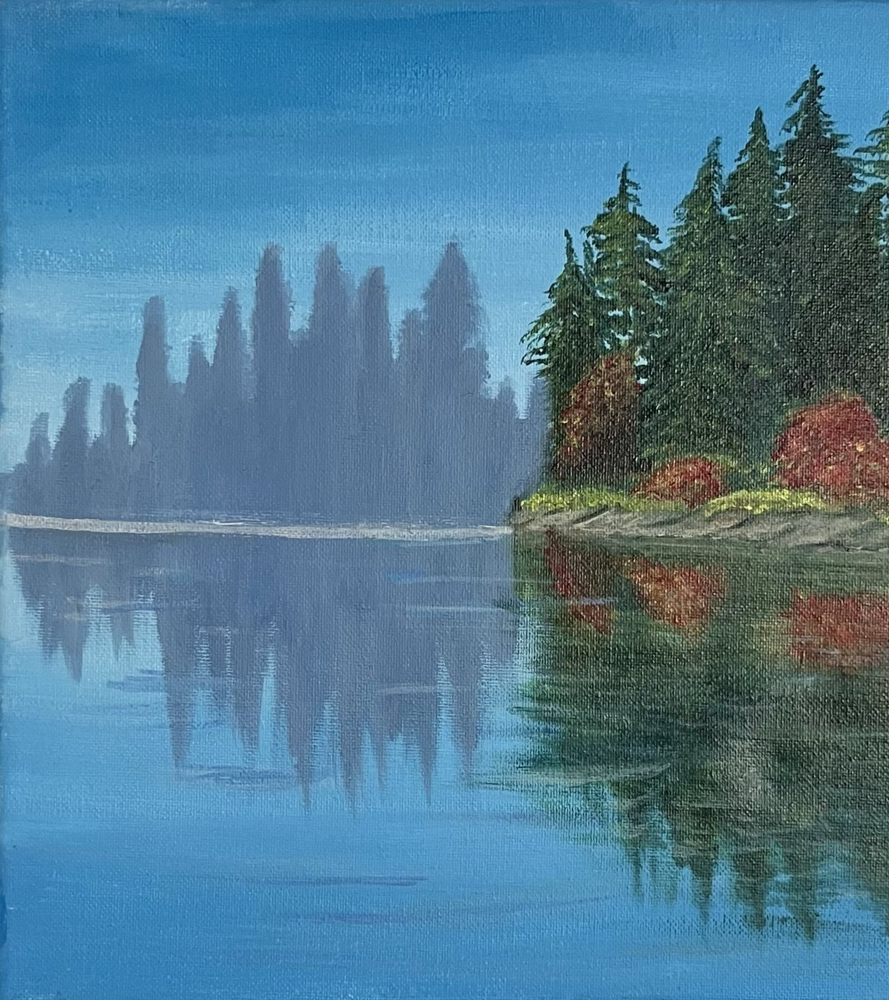
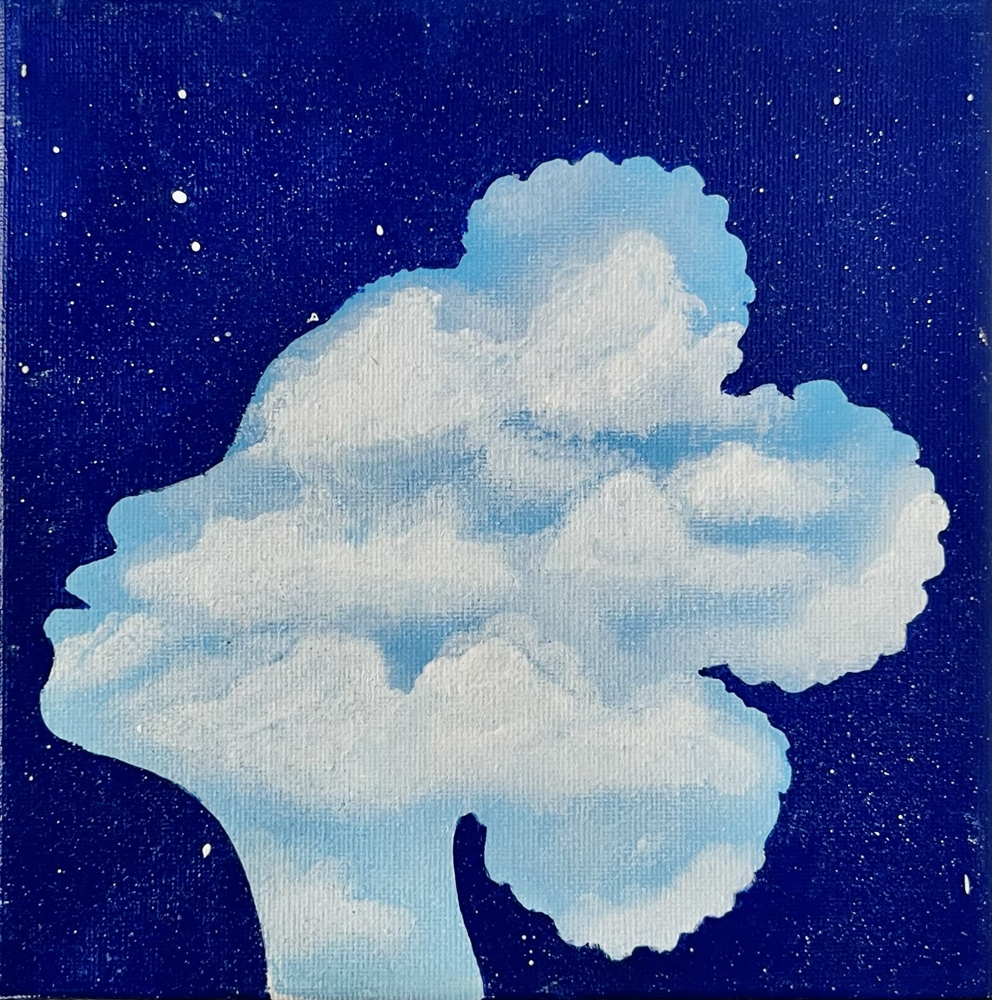
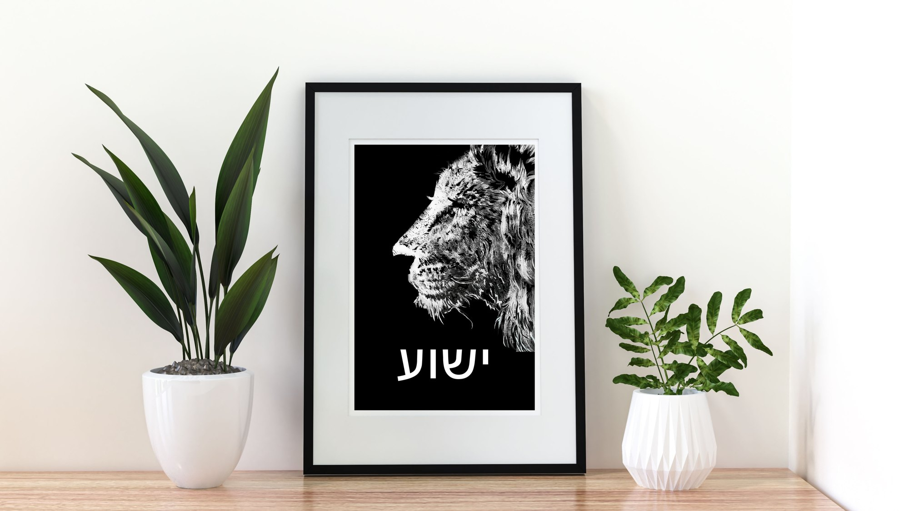

01 — Acrylic on canvas
Paintings
Landscapes, surreal scenes and abstractions rooted in nature — still water, night skies, living creatures — built up in layered, luminous colour.
See the paintingsContemplative paintings, textured 3D works on canvas and digital prints by Canadian artist Daisy Kiden — where the natural world drifts toward abstraction and the surreal.

Daisy Kiden’s paintings begin in the natural world — a still lake, a night sky, the steady gaze of an animal — and then drift somewhere less literal.
A tree’s crown becomes a bank of daylight clouds. A lion’s face dissolves into flecks of colour. A shoreline holds its reflection so perfectly you stop being sure which half is real.
The work is quiet by intention. It rewards a second look, and a tenth — the kind of piece you live with slowly.
Three bodies of work, one way of looking: begin with something real in nature, then leave room to wander.

01 — Acrylic on canvas
Landscapes, surreal scenes and abstractions rooted in nature — still water, night skies, living creatures — built up in layered, luminous colour.
See the paintings02 — Textured acrylic on canvas
Sculpted by hand on the canvas — flowing raised lines, layered ridges and fine surface detail that echo water, wind and terrain. Finished in a calm, earthy palette of sand, clay, stone and bone for minimal interiors.
See the 3D works
03 — Digital work and prints
Fine-lined digital illustrations and abstract compositions, alongside high-resolution prints of selected acrylic paintings.
See digital & printsEach piece is an original, signed by the artist. Enquire for pricing, detail photographs, or to see a work in your own space.
Alongside the canvases, Daisy draws digitally — fine-lined illustrations and abstract compositions built with the same eye for detail and restraint.
Selected acrylic paintings are also digitised at high resolution, so a painting can live on as a print. Enquire for paper, sizes and editions.
Acquire an original, signed painting or 3D work — a piece to anchor a living room, or something quieter for a bedroom or study. Detail photographs and sizing guidance on request.
Commission a piece sized, textured and coloured for a specific room and palette. Daisy works from your plans, swatches and photographs so the art belongs to the space from day one.
Original works and cohesive series for showrooms, boutique hotels, model homes and retail interiors. Trade and collaboration enquiries are welcome.
Many of Daisy’s pieces are made for one particular wall. A commission begins with the room and ends with a work that could only hang there.
Start a commissionDaisy Kiden is a Canadian artist based in Ontario, creating contemplative, nature-inspired works for collectors and interiors that value stillness, space and fine detail.
Her paintings begin with something observed in nature — a lake at first light, a sky full of stars, an animal’s gaze — and follow it somewhere quieter and stranger, toward abstraction and the surreal. Alongside them she makes hand-sculpted 3D works in earthy, minimal tones, and digital illustrations and prints.
Her art is designed not simply to decorate a space, but to become part of it — shaping mood, anchoring stillness, and inviting reflection. Kiden Studio is the name she works under; every piece is her own.
Ask about an available piece, a commission for a particular room, a print, or a trade collaboration. Daisy replies personally.